All data in this report is synthetic. It was generated by a seeded Python simulation of shop operations (included in the repository) so the database could be tested at realistic scale. Every person, company, phone number and VIN is fictional.
In 2021 I designed a service-management database for an auto repair shop as my term project for IS 475, Database Design and Implementation, at UNLV. In 2026 I audited it, found that it no longer ran and that several of its answers were wrong, and rebuilt it end to end: schema, test data, reporting layer, 22 analysis queries, data-quality tests and an interactive dashboard.
The original report named two root problems: (1) jobs and appointments running late, which drives customers away, and (2) no tracking of parts usage, which leads to stockouts. The 2021 design couldn't measure either: it linked parts to mechanics instead of jobs, and each mechanic to a single customer.
The business is an independent, general-repair auto shop in the southwest Las Vegas valley with 6 technicians, about 4,000 repair orders a year and roughly $1.4 million in annual sales.
The 2021 report described a shop in trouble: appointments were delayed or double-booked, mechanics couldn't work efficiently because parts were out of stock, nobody recorded which parts were used, and the resulting delays were costing customers and revenue. The shop had no database, so it couldn't study any of these patterns.
That diagnosis still holds, but the 2021 database couldn't confirm it. Answering "are late jobs costing us customers?" requires linking an appointment to a job, the job to the parts it used and the technician who did it, and the customer to their next visit. Version 2 is designed around exactly those links.
| Area | Questions | Queries |
|---|---|---|
| Revenue & profit | How are sales and margin trending? Which services and vehicle makes drive profit? Did 2025 beat 2024? | Q1–Q4 |
| Operations | What makes a job late? Are popular appointment slots overbooked? Who no-shows? What's on the shop floor right now? | Q5–Q8 |
| Technicians | Who is efficient, who is accurate, is the apprentice program working, and what do comebacks cost? | Q9–Q11 |
| Inventory | Which parts run out, what should reorder points be, do suppliers deliver on time, are parts margins holding? | Q12–Q15 |
| Customers | Does a late job cost us the customer? How well do we retain each cohort? Which channels bring the best customers? What drives bad reviews? | Q16–Q20 |
| Finance | How are customers paying, and who owes us money? | Q21–Q22 |
The script ran fine in 2021 on Windows, apart from the demonstration DELETEs. The real problems were quieter: several queries returned wrong answers with no warning, and on Linux a table-name inconsistency broke 12 statements. Full audit: docs/FIX_LOG.md.
| 2021 issue | What it caused | Version 2 |
|---|---|---|
Table created as Vehicle, used as VEHICLE | Ran on Windows, which ignores case; 12 statements fail on Linux, which doesn't | Consistent lowercase names; tested on Linux |
mechanic.Customer_ID: each mechanic tied to one customer | Queries only worked because every table had exactly one row per customer | Mechanic is an employee; the work order records who did the job |
| Parts linked to mechanics, not jobs | Couldn't answer "which parts went into which repair", the report's own inventory problem | work_order_part links each part to its job |
| Revenue by make joined customer → vehicle → bill | Double counting: a test customer's $413.72 was credited to both of their cars | One path: invoice → work order → vehicle |
year > 2000 AND make='Honda' OR make='Toyota' | Returned 5 rows instead of 3, including 1995 and 1998 Toyotas | IN (...) and numeric model_year |
| "Most used part" counted rows, not units; cost ignored quantity | Wrong category ranked #1; costs understated up to 3.4× | Explicit quantity × unit_cost |
No CHECK constraints; status default misspelled 'incomeplete' | Any value accepted | CHECK constraints on every code and status column |
| DELETEs by time, price or phone number | 6 of 7 demo DELETEs blocked, mostly by foreign keys; one removed 2 unrelated appointments | Key-based changes inside transactions; history kept |
Each rule maps to a constraint in sql/01_schema.sql or a test in sql/05_data_quality_checks.sql, so the rules are enforced, not just documented.
| ID | Rule | Enforced by |
|---|---|---|
| BR-1 | A customer owns one or more vehicles; each vehicle belongs to exactly one customer. A VIN is unique and valid. | FK, UNIQUE, CHECK (VIN pattern); test 1, 3 |
| BR-2 | An appointment is for one vehicle at one time. It is Scheduled, Arrived, No-Show or Cancelled. | FK, CHECK; tests 5, 6 |
| BR-3 | A work order is one visit. It may come from at most one appointment; walk-ins have none. | Nullable UNIQUE FK; test 4 |
| BR-4 | Every work order has exactly one responsible technician, who must be employed on that date. Others may help; responsibility stays with the assigned technician (2021 rule E). | NOT NULL FK; test 8 |
| BR-5 | A work order contains one or more services (labor lines) and zero or more parts, each recorded with the price at the time. | Composite PKs; price columns on lines |
| BR-6 | A job is Completed only when it has a completion time, and the completion time is after it was opened. | CHECK constraints |
| BR-7 | A warranty comeback points to the original job, is on the same vehicle, happens after it, and is never billed. | Self-referencing FK; tests 11, 12 |
| BR-8 | Every part that enters stock is recorded as an opening balance, a replenishment, or a special order for one job. Stock can never go negative. | CHECK; tests 18, 20 |
| BR-9 | Each completed customer-pay job has exactly one invoice, dated the day it finished. Totals are calculated, never typed. | UNIQUE FK; view; tests 10, 13 |
| BR-10 | An invoice may be paid in one or more payments but never overpaid. Retail customers pay at pickup; fleet accounts pay on terms. | FK; tests 14, 15, 16 |
| BR-11 | A customer may leave at most one rating (1–5) per job, after the job is completed. | UNIQUE FK, CHECK; test 17 |
| BR-12 | Records with history (customers, technicians, invoices) are never deleted; their state changes instead. | FKs with RESTRICT; 06_maintenance_examples.sql |
Entity relationship diagram in crow's-foot notation. Colors mark the four subject areas. Source: docs/erd.dot (Graphviz).
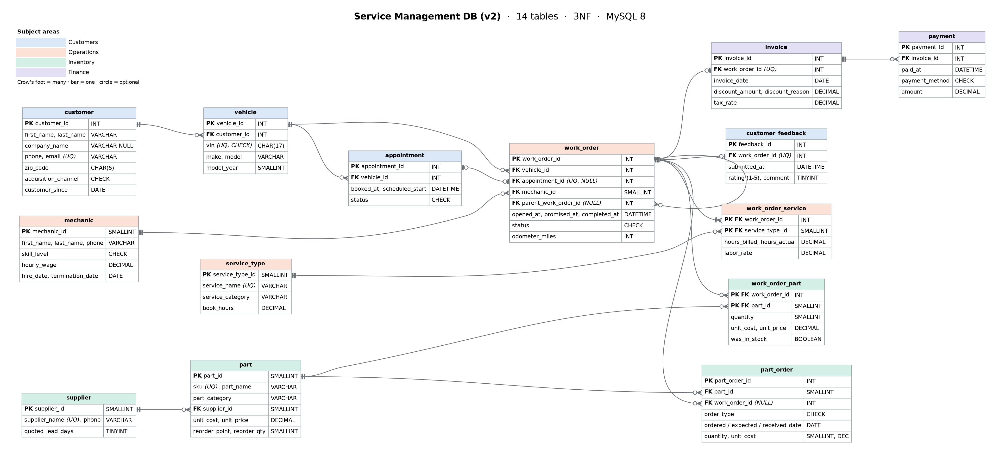
| Table | What one row represents | Rows |
|---|
First normal form. Every column holds one value. The 2021 Customer_Name became first_name and last_name, and Appt_Date plus a text Appt_Time ('12:21 PM') became one DATETIME.
Second normal form. The two junction tables (work_order_service and work_order_part) have composite keys, and every other column depends on the whole key. Hours billed depend on this service on this job, not on the service alone.
Third normal form. No column depends on another non-key column:
v_invoice_totals, v_part_inventory, v_work_order_summary). A stored total can drift from its line items; a derived one can't.appointment and work_order don't store customer_id, because the vehicle already determines the customer (a transitive dependency).work_order_part.unit_price repeats the catalog price, but it's a fact about the sale: when the catalog price changes, old invoices must not change. Maintenance example 6 demonstrates this.work_order.vehicle_id alongside appointment_id. About a third of jobs are walk-ins with no appointment, so the job needs its own vehicle link. Data-quality test 4 guarantees the two never disagree.UNIQUE. The 2021 text keys such as 'C-42 ' (trailing space included) are gone.Seven views turn the normalized tables into analysis-ready facts. The dashboard, the Power BI/Tableau exports and the analysis queries all read from these views, so every tool uses one definition of every metric:
| View | Grain and purpose |
|---|---|
v_work_order_summary | One row per job: revenue, cost, profit, timing, on-time flag, parts delays, comeback flag, rating. The main fact table. |
v_invoice_totals | One row per invoice: labor, parts, discount, tax, total, paid, balance due. |
v_appointment_summary | One row per appointment: lead time, slot, outcome, check-in wait, bookings in the same slot. |
v_part_inventory | One row per part: on hand, on order, usage, stockouts, suggested reorder point (recursive calendar CTE for daily demand). |
v_mechanic_scorecard | One row per technician: efficiency, on-time rate, comeback rate, rating, sales. |
v_monthly_kpis | One row per month: the executive KPI set. |
v_customer_summary | One row per customer: visits, lifetime sales, recency, satisfaction. |
The 2021 data had 50 hand-typed rows per table (the course minimum), every relationship 1:1. That's too small to analyze and too simple to expose bugs like double counting. Version 2 is loaded with about 70,000 rows from a seeded simulation of two years of shop operations.
python/generate_data.py (standard library only, seed 2021) simulates the shop one business day at a time:
Constraints block most bad data at insert time. sql/05_data_quality_checks.sql covers the rules that span rows and tables. It runs 20 checks and returns one PASS/FAIL row per check. All 20 pass.
| # | Check | Technique |
|---|---|---|
| 3 | Every VIN's check digit (position 9) is valid | Recursive CTE over 17 positions, transliteration, weighted MOD 11 |
| 9 | Odometer never goes backwards for a vehicle | LAG() over each vehicle's visits |
| 18 | Every out-of-stock part line has a matching special order, and vice versa | Correlated EXISTS |
| 20 | Stock on hand never goes negative | Running SUM() OVER across a receipts/usage ledger |
| 1–19 | Plus orphan, duplicate, date-order, invoice, payment and status-consistency checks | Anti-joins, GROUP BY … HAVING |
The suite caught real bugs. On its first run, 3 checks failed. One was a genuine error in my generator: a returning customer could book their next visit before their previous visit had happened. The other two were edge cases in the checks themselves: an appointment at exactly the snapshot time, and two cars finished at 11:30 AM on the snapshot day and not yet picked up. I fixed the generator, tightened the two checks, and documented each case.
Each finding below names the query that produced it (sql/04_analysis_queries.sql). Charts come from the operations dashboard with the full 24 months selected.
| KPI (Q2) | 2024 | 2025 | Change |
|---|---|---|---|
| Car count (work orders) | 3,941 | 3,998 | +1.4% |
| Net sales | $1,362,548 | $1,497,116 | +9.9% |
| Average repair order | $359.70 | $386.95 | +7.6% |
| Gross margin | 65.6% | 66.6% | +1.0 pts |
| Parts margin | 53.0% | 52.1% | −0.8 pts |
| On-time completion | 76.8% | 76.4% | −0.3 pts |
| Average rating (1–5) | 4.19 | 4.17 | −0.02 |
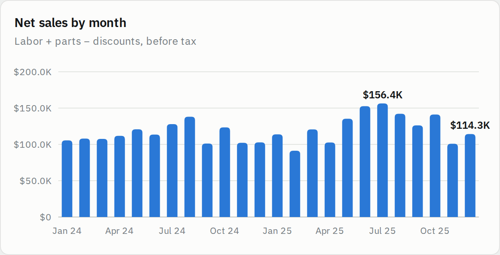
Growth came from a higher average ticket, helped by a labor-rate increase from $140 to $150 per hour, while car count was nearly flat. Sales peak every summer (June–August 2025 averaged $150K a month vs. $116K the rest of the year) because Las Vegas heat drives A/C, battery and cooling repairs (Q15: A/C work runs at 2.5× its average month in July and 0.15× in December). Brakes are the largest category at 18% of sales and the most profitable overall (Q3).
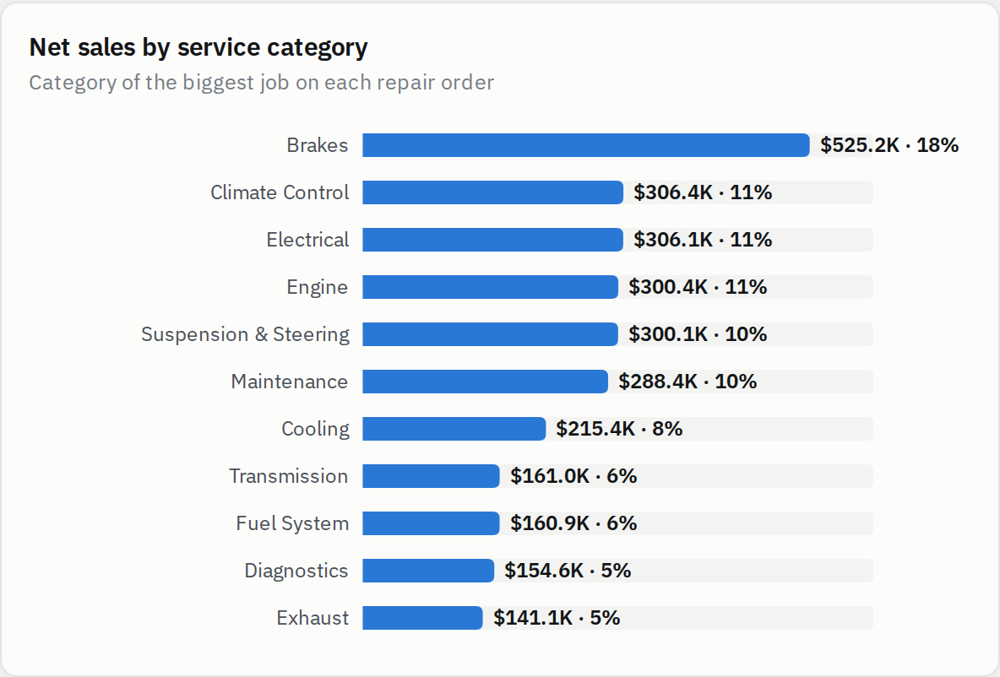
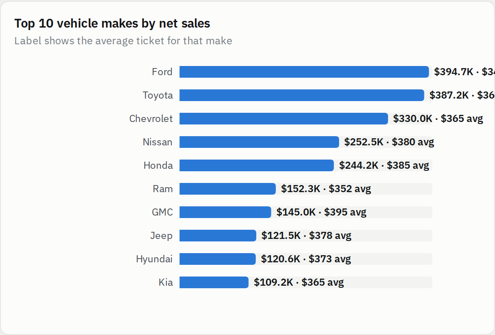
Q4 is the corrected version of 2021 query 11. European makes (BMW, Mercedes-Benz, Volkswagen, Audi) average 7–17% above the shop's typical ticket because their flat-rate labor times are longer.
Only about 76% of jobs finish by the time promised at drop-off. Q5 splits on-time performance by every factor the database records:
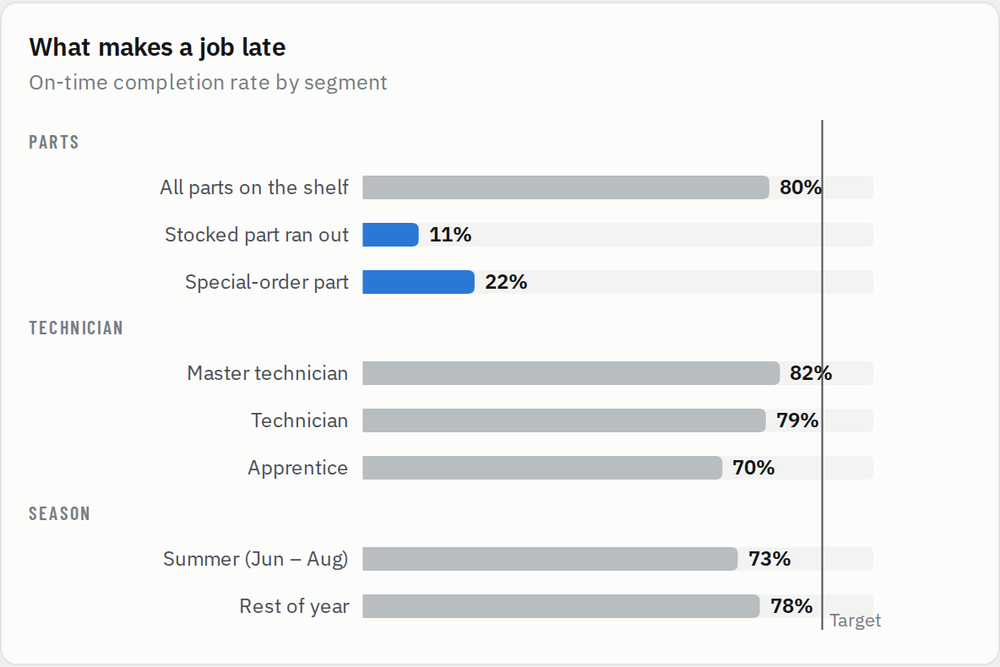
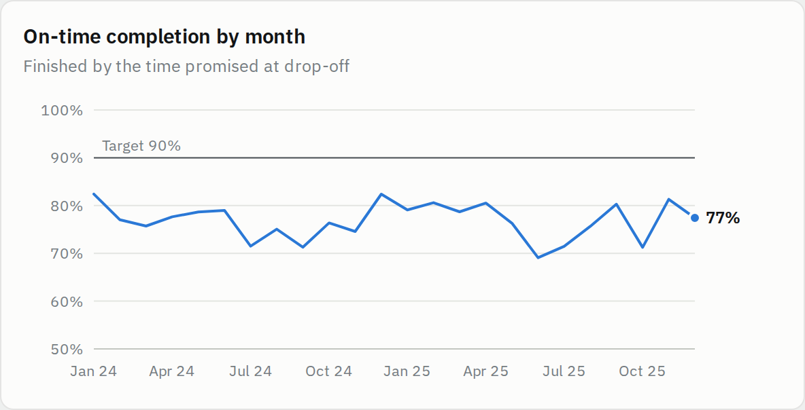
Parts availability dominates. When every part was on the shelf, 79.6% of jobs finished on time. When a normally stocked part had run out, only 11.0% did, and turnaround jumped from 6 hours to 101. Technician skill matters much less (apprentices 70%, master technicians 82%). Summer's lower on-time rate (73.5%) is partly summer stockouts and partly workload: even with every part on the shelf, summer jobs were on time 77.5% of the time vs. 80.4% the rest of the year. Walk-ins and appointments perform about the same (75% vs. 77%).
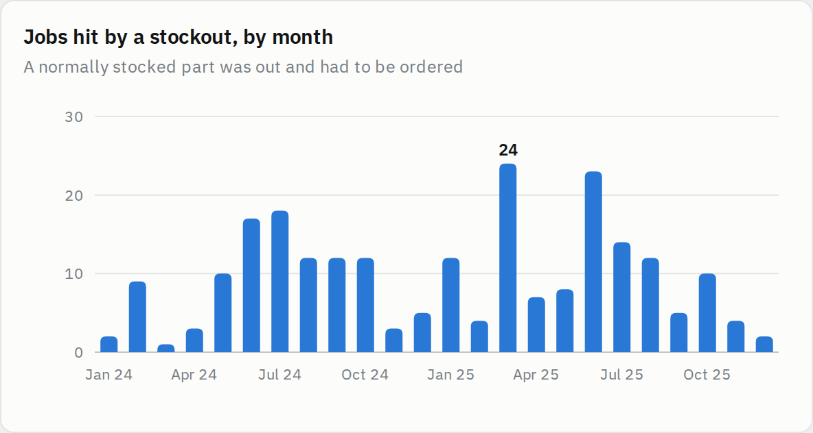
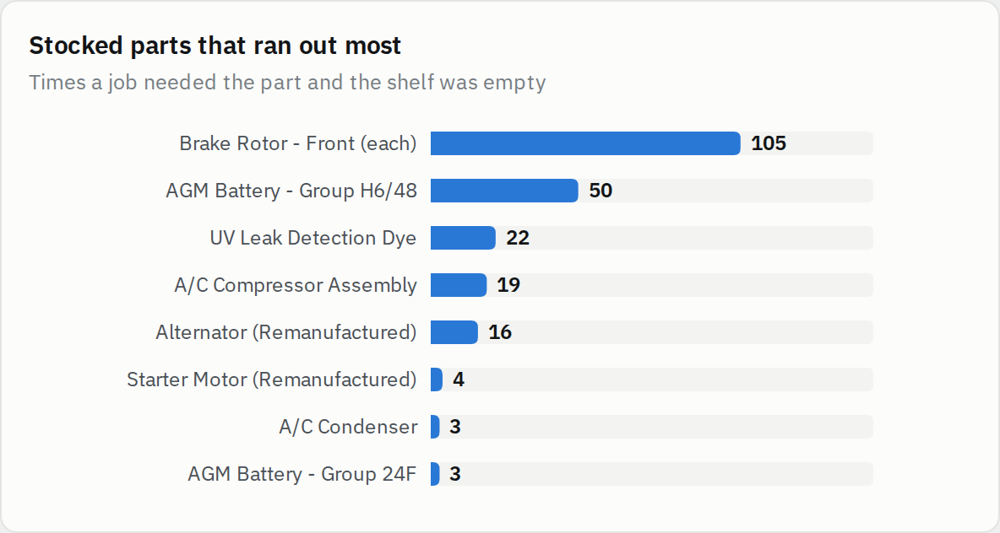
Stockouts cluster in two places: front brake rotors, the shop's highest-volume repair part, and summer parts (AGM batteries, A/C compressors, leak-detection dye) whose demand doubles in the heat while reorder points stay the same. Q12 compares each part's reorder point with a recommended one calculated in v_part_inventory:
recommended reorder point = avg daily use × avg actual lead time
+ 1.65 × σ(daily use) × √(lead time) -- 95% service level
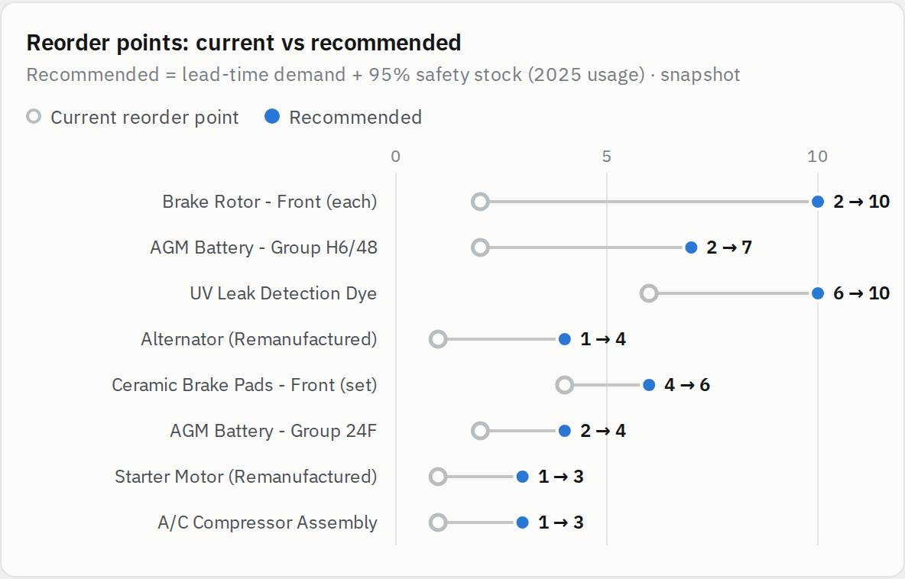
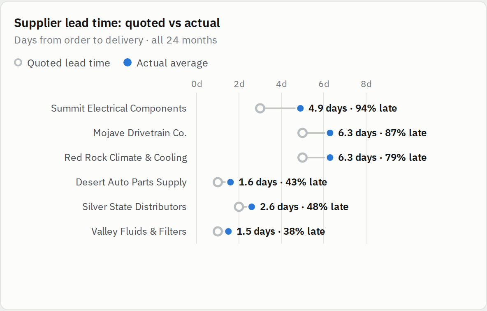
Front rotors need a reorder point of 10, not 2; the Group H6 battery 7, not 2; alternators 4, not 1. Raising all 11 affected parts costs about $3,570 in extra stock, set against 229 jobs over two years that waited an average of 4.1 days for parts and rated the shop 2.5 out of 5.
Suppliers make it worse (Q13). Summit Electrical Components quotes 3 days and averages 4.9; 94% of its orders arrive late. Because the reorder-point formula uses actual lead times, it already compensates, but the shop should hold Summit to its quote or move volume to another supplier.
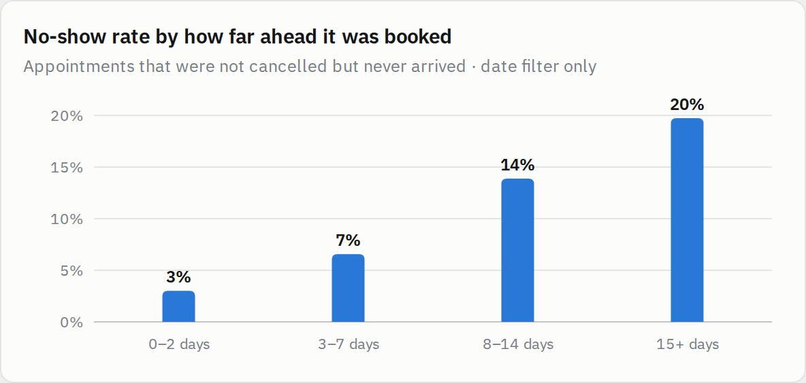
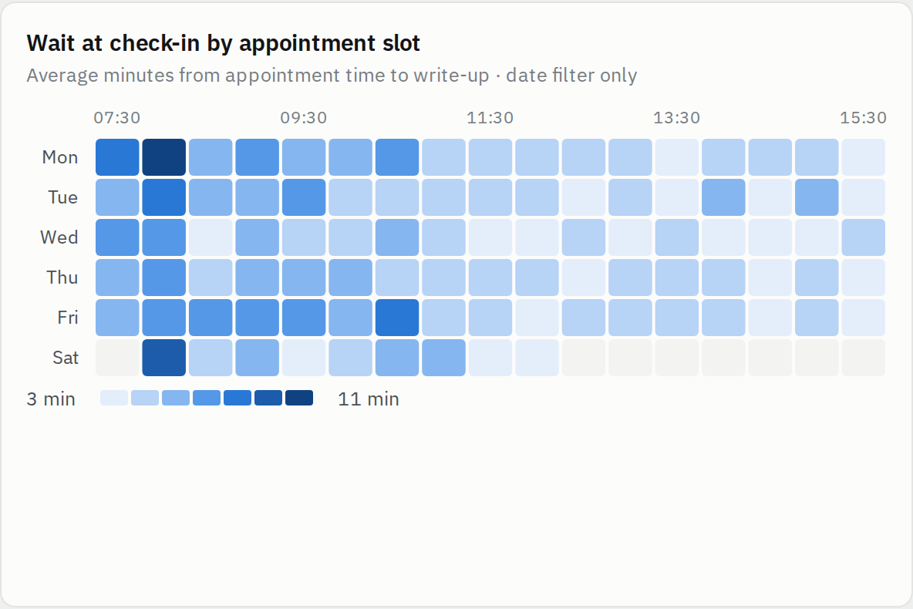
No-shows rise with booking lead time (Q7): 3.0% for appointments made 0–2 days out, 6.6% at 3–7 days, 13.9% at 8–14 days and 19.7% at 15+ days. A reminder text for anything booked a week or more ahead targets the 21% of bookings that produce nearly half (48%) of all no-shows.
The 8:00 AM slot is the 2021 "clashing appointments" problem (Q6). It averages 2.5 bookings per slot, 45% of its customers arrive into an overbooked slot, and 15% wait more than 15 minutes to be checked in, vs. under 2% after noon. With two service writers, the fix is to cap each half-hour slot at two check-ins and move the overflow to 8:30–9:30.
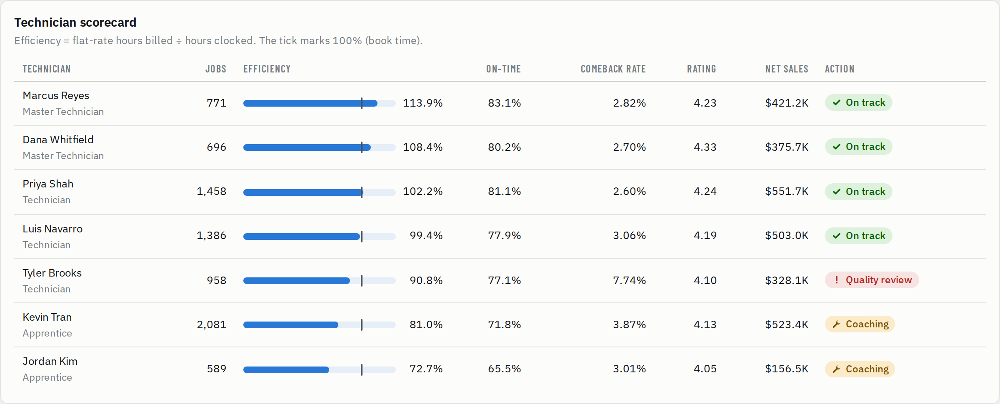
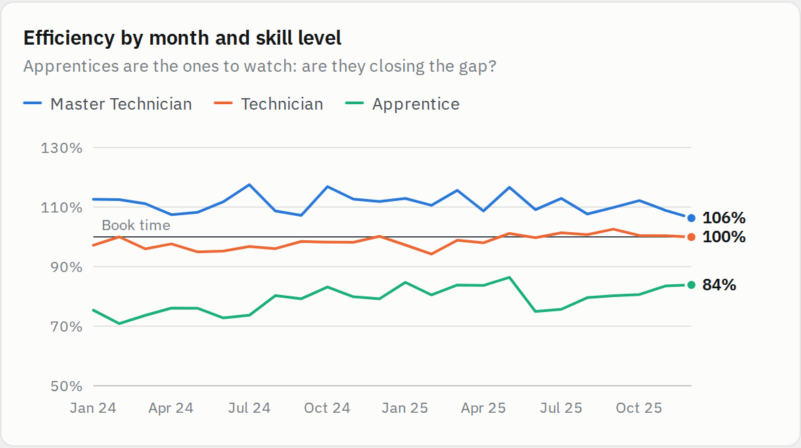
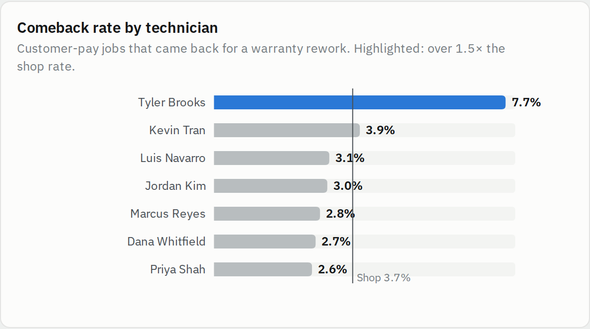
Efficiency (flat-rate hours billed ÷ hours clocked) ranges from 114% for the senior master technician to 73% for the newest apprentice (Q9). Quality is a separate question. Tyler Brooks was an average-speed technician (91%) but had a 7.7% comeback rate, 2.6× everyone else. His 70 comebacks cost $5,046 in unbilled rework (Q11, a self-join from each rework to its original job), and customers rated those original jobs 2.8 out of 5. He left in May 2025.
The apprentice program works (Q10). Kevin Tran's efficiency rose every quarter, from 74.6% in Q1 2024 to 89.5% in Q4 2025 (a LAG() window over quarterly results). Jordan Kim, hired in June 2025, is on the same curve (69% → 79% in two quarters).
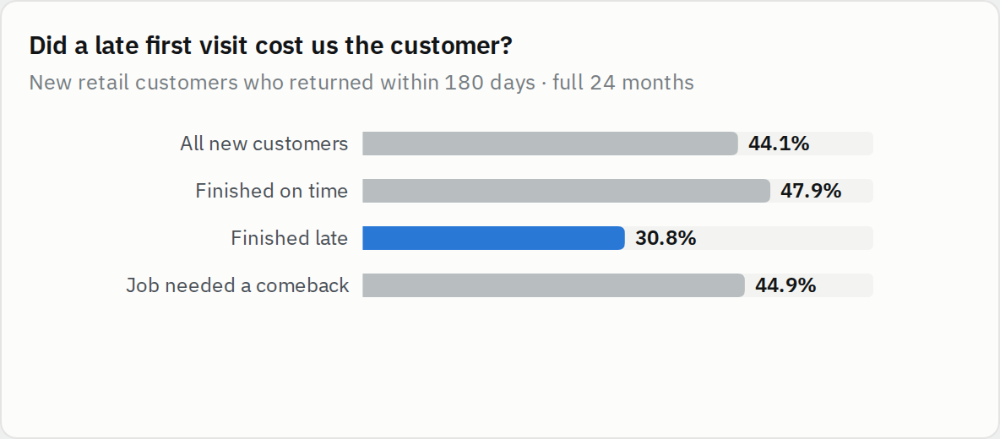
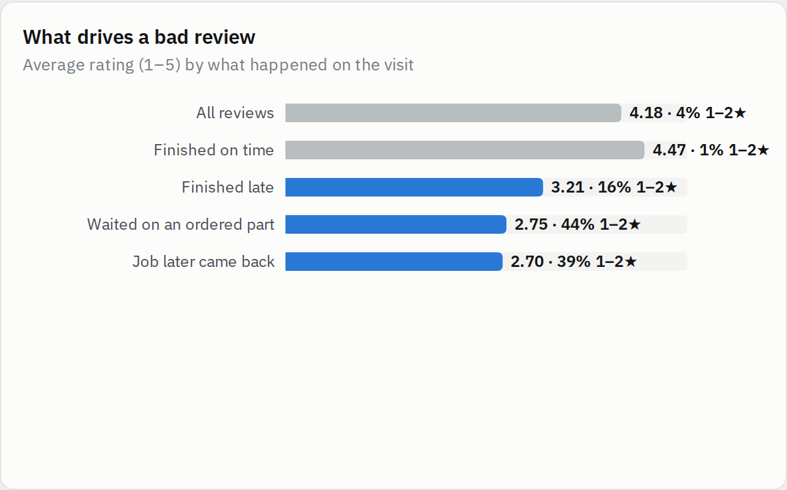
This is the central finding (Q16). Among new retail customers who had six months to come back, 47.9% returned after an on-time first visit but only 30.8% after a late one. It uses ROW_NUMBER() to find each customer's first visit and LEAD() to find their next one. Applied to the 445 customers whose first job was late, the gap is about 76 lost returning customers, or roughly $29,000 in next visits at the 2025 average repair order of $387, before counting lifetime value. Ratings tell the same story (Q20): 4.47 when on time, 3.21 when late, and 2.75 after waiting on an ordered part, with 43% of those reviews at 1–2 stars.
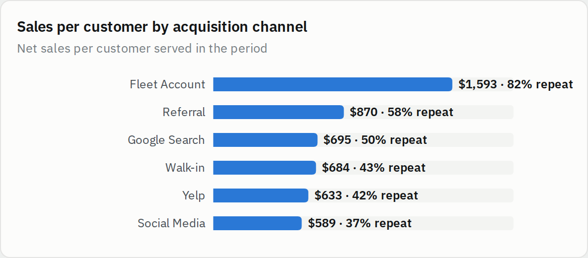
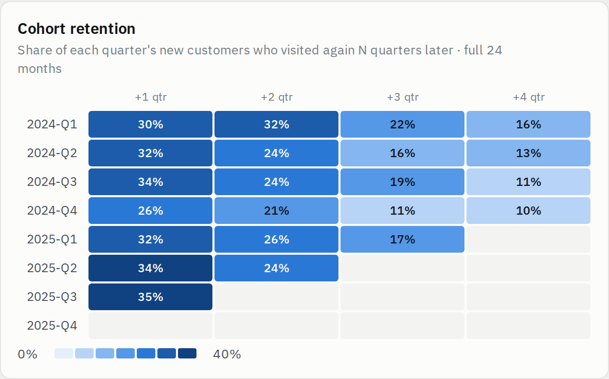
Referrals bring the best retail customers (Q18): a 56.6% repeat rate and $798 in sales per customer, vs. 38.1% and $573 from social media. Fleet accounts are the most valuable of all ($1,477 per account, 81% repeat). The cohort view (Q17) shows about a third of each quarter's new customers returning the following quarter, and about 10–16% still visiting a year later. RFM segmentation (Q19, NTILE(5)) finds 17% of customers ("Champions") produce 36% of sales, and 430 "at risk" high-value customers average 17 months since their last visit, a ready-made win-back list.
Finance (Q21–Q22). Mobile-wallet payments grew from 7.6% to 12.8% of transactions while cash fell from 11.7% to 8.4%. Accounts receivable is small and current: $13,260 owed by fleet accounts, 85% of it under 30 days old.
The dashboard turns the reporting views into a tool a shop manager could use every morning. It is a single self-contained web page (docs/index.html), published free with GitHub Pages, with no server or login.
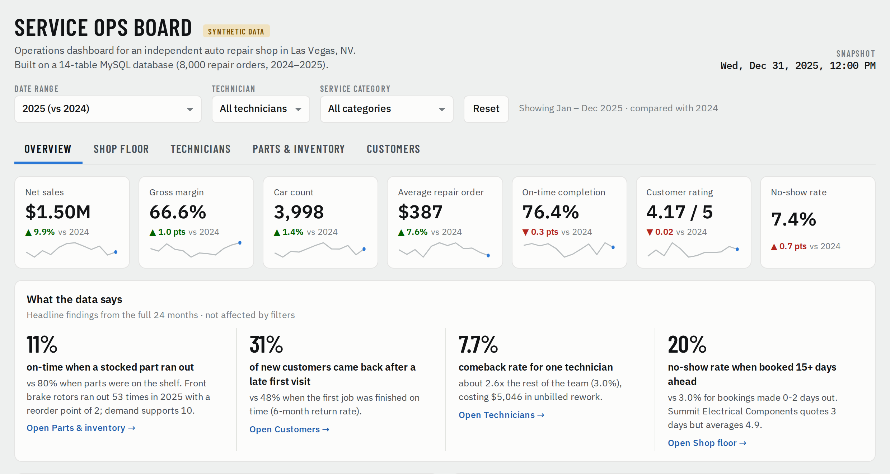
| Page | Answers |
|---|---|
| Overview | 7 KPIs with year-over-year change and sparklines, headline findings, monthly sales, on-time trend vs. 90% target, sales by category and by vehicle make |
| Shop floor | Bay board of every open repair order with promise status and parts in transit, what makes a job late, check-in wait by slot (heatmap), no-shows by lead time, turnaround distribution |
| Technicians | Scorecard with efficiency meters and action flags, efficiency by skill level over time, comeback rate vs. shop average |
| Parts & inventory | Stockouts by month, parts that ran out most, current vs. recommended reorder points, supplier lead times, reorder watchlist |
| Customers | Customers served and repeat rate, value by acquisition channel, late-visit churn, rating drivers, cohort retention |
Global filters (date range with year-over-year comparison, technician, service category) re-scope every chart. Every chart has hover tooltips and a table view, and the page supports light and dark mode and phone screens. dashboard/POWER_BI_GUIDE.md and dashboard/TABLEAU_GUIDE.md rebuild the same dashboard in Power BI (with every DAX measure in measures.dax and a matching theme file) and in Tableau Public, from the exported workbook data/bi/ServiceOps_Dashboard_Data.xlsx.
Ranked by expected impact on the two original problems. Each has a metric on the dashboard so the shop can tell whether it worked.
| # | Action | Evidence | Track |
|---|---|---|---|
| 1 | Raise reorder points on 11 parts to the recommended levels; use higher summer reorder points (June–August) for batteries and A/C parts. | Stockout jobs: 11% on-time, 101-hour turnaround, 2.5★. Cost: ~$3,570 in added stock. | Jobs hit by a stockout; reorder watchlist |
| 2 | Promise times that include parts ETAs, plus a text update when a job will be late. | Late first visit: 30.8% return vs. 47.9% (≈76 lost customers, ≈$29K). | On-time %; 6-month return rate |
| 3 | Supplier accountability: hold Summit Electrical to its 3-day quote or shift volume. | 94% of Summit orders late; average 4.9 days. | Supplier late %; actual lead days |
| 4 | Appointment reminders for bookings 8+ days out; cap 8:00 AM at two check-ins per writer. | No-shows 13.9–19.7% vs. 3.0%; 15% of 8 AM customers wait 15+ min. | No-show rate; check-in heatmap |
| 5 | Add comeback rate to technician reviews; flag anyone over 1.5× the shop rate for a quality review. | One technician at 7.7% (2.6× peers) cost $5,046 in rework. | Comeback rate by technician |
| 6 | Keep pairing apprentices with master technicians and give apprentices longer promise buffers. | First apprentice's efficiency 75% → 90% in 8 quarters; apprentice on-time 70%. | Efficiency by skill level |
| 7 | Fund a referral program and a win-back campaign for "at risk" high-value customers. | Referral customers: 57% repeat, $798 each; 430 lapsed high-value customers. | Sales per customer by channel; RFM segments |
| 8 | Re-price electrical parts to protect margin. | Electrical parts margin fell 2.8 pts after a 9% supplier cost increase (Q14). | Parts margin by category |
Generated from MySQL's information_schema, so it always matches the deployed schema. PK = primary key, FK = foreign key, UQ = unique.
| Technique | Where |
|---|---|
| Common table expressions (CTEs) | All 7 views; Q1–Q3, Q10, Q12, Q14–Q17, Q19, Q21; DQ suite |
| Recursive CTE | v_part_inventory (business-day calendar for demand variability); DQ check 3 (VIN positions) |
Window functions: LAG, LEAD | Q1 (month-over-month and year-over-year), Q10 (quarter-over-quarter), Q16 (next visit), DQ check 9 |
Window functions: ROW_NUMBER, RANK, NTILE | v_work_order_summary (primary service), Q3, Q9, Q16, Q19 (RFM quintiles) |
Window aggregates: SUM/AVG/COUNT … OVER | Q1 (YTD), Q3–Q4 (share of total), Q9 (vs. shop average), Q15, Q19, v_appointment_summary, DQ check 20 (running balance) |
| Conditional aggregation (pivots) | Q2, Q7, Q14, Q15 (12-month pivot), Q17 (cohort matrix), Q21 |
| Self-join | Q11 (rework → original job); DQ check 12 |
Correlated subqueries, EXISTS / NOT EXISTS | Q8; DQ checks 1, 11, 18, 19; maintenance examples 10–11 |
| Statistics in SQL | STDDEV_SAMP and SQRT for safety stock in v_part_inventory |
| Transactions | 06_maintenance_examples.sql: 11 safe UPDATE/DELETE patterns, each ending in ROLLBACK |
| Constraints | 14 PKs, 16 FKs (including a self-reference), 8 UNIQUEs, 30 CHECKs (some with REGEXP_LIKE) |
# 1. Build the database (MySQL 8.0+). Runs in about 10 seconds. mysql -u root -p < sql/01_schema.sql mysql -u root -p < sql/02_seed_data.sql mysql -u root -p < sql/03_views.sql # 2. Ask questions and test the data mysql -u root -p -t < sql/04_analysis_queries.sql mysql -u root -p -t < sql/05_data_quality_checks.sql # expect 20 x PASS mysql -u root -p -t < sql/06_maintenance_examples.sql # rolls itself back # 3. Optional: regenerate data, export for BI tools, rebuild the dashboard python3 python/generate_data.py # standard library only pip install pymysql openpyxl python3 python/export_bi_data.py # data/bi/*.csv + .xlsx python3 python/build_dashboard.py # docs/index.html
MySQL Workbench users: open each file with File → Open SQL Script and run it with the lightning-bolt button, in the order above.